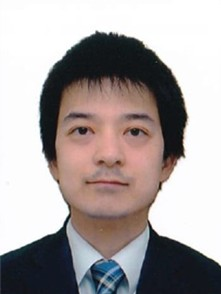

Members
Meet our team. Members with diverse backgrounds contribute their individual strengths.
Researcher

Masahiko Demura
Group Leader
Research Network and Facility Services Division Director
Materials Open Platform for Structural Materials-DX External Collaboration Division Platform Director
Special Assistant to the President
東京工業大学 物質・情報卓越教育院/物質理工学院 特定教授
Materials research DX through Materials Integration
Computational materials engineering, data-driven, inverse problems, industry-academia collaboration platform

Yoshiaki Toda
Principal Researcher
Materials Open Platform for Structural Materials-DX External Collaboration Division
横浜国立大学 大学院理工学府 客員准教授
Evaluation and development of heat-resistant materials for supercritical geothermal power generation
Renewable energy, geothermal power, casing materials, heat-resistant steel, corrosion, oxidation, high temperature/pressure, supercritical water, steam, acidity
Ikumu Watanabe
Principal Researcher
Associate professor, Subprogram in Materials Science and Engineering, Graduate School of Science and Technology, University of Tsukuba (NIMS Joint Graduate School)
Associate professor, Subprogram in Materials Science, Graduate School of Science and Technology, University of Tsukuba (NIMS Joint Graduate School)
Computer-aided materials research and development
Computer-aided engineering, multiscale modeling, finite element method, mathematical optimization

Kaita Ito
Senior Researcher
Materials Open Platform for Structural Materials-DX External Collaboration Division
In-process monitoring of materials manufacturing by AE method
Acoustic emission method, non-destructive evaluation, non-destructive inspection, in-process monitoring, IoT

Yukari Katsura
Senior Researcher
Associate professor, Degree Program in Materials Innovation, Graduate School of Science and Technology, University of Tsukuba (NIMS Joint Graduate School)
RIKEN Molecular Informatics Team, RIKEN Center for Advanced Intelligence Project Guest Researcher
Surveying materials science with the large-scale database Starrydata
Materials DX, database, materials informatics, new material discovery, inorganic crystal structures, thermoelectric materials, magnets, quasicrystals, superconductors, battery materials

Hiroshi Kakinuma
Invited Researcher
Tohoku University Advanced Institute for Materials Research Associate Professor (Jr. Principal Investigator) (Ph.D (Eng.))
Tohoku University Institute for Materials Research
Materials informatics, machine learning, corrosion protection, corrosion resistance, hydrogen embrittlement, aluminum alloys, stainless/low-alloy/carbon steel, magnesium alloys, chemical conversion, electrochemical measurement, metallic materials, corrosion science, hydrogen sensor, local electrochemical measurement
Postdoctoral Research Fellow

Kei Saito
Postdoctoral Researcher
Student
Graduate Research Assistant

Zhi Yang
Graduate Research Assistant

Tianwen Tang
Graduate Research Assistant

Rani Sundas
Graduate Research Assistant
Trainee

Ziyan Jiang
Trainee
University of Tsukuba Graduate School
Apr 2025 –
Hang Dong
Intern
The University of New South Wales
May 2026 –
Mishra Aniket
Intern
Indian Institute of Technology, Kanpur
May 2026 –
Valentina Watanabe
Intern
Trinity College Dublin
May 2026 –
Thasleem Ibrahim
Intern
National Institute of Technology, Tiruchirappalli
May 2026 –
Sajja Akshith
Intern
National Institute of Technology, Tiruchirappalli
May 2026 –
Acharya Aditya
Intern
Indian Institute of Technology (BHU) Varanasi
May 2026 –
Visiting Researchers
Erina Fujita
Visiting Researcher
Project Technical Staff
Tomoya Mato
NIMS Engineer

Atsumi Tanaka
Project Technical Staff

Dewi Yana
Project Technical Staff
Nina Kobata
Project Technical Staff
Yuki Yamamoto
Project Technical Staff
Shoko Taniguchi
Project Technical Staff
Office Staff
Sachiko Nagase
Administrative Staff
Center for Basic Research on Materials / Management Office
Manami Kasuga
Administrative Staff
Center for Basic Research on Materials / Management Office
Akemi Tateno
Administrative Staff
Research Network and Facility Services Division / Management Office
Alumni
- Masanohiro Yanagawa (University of Tsukuba Graduate School) – Mar 2026
- Xufei Chen (University of Tsukuba Graduate School) – Mar 2026
- Florian Gruen (Kyoto University Graduate School) Jan 2026 – Mar 2026
- Dayuan Liu (University of Tsukuba Graduate School) – Feb 2026
- Cecília Nemessányi (Budapest University of Technology and Economics / Architect) Jun 2025 – Jan 2026
- Kaushik Raj Pyla (University of New South Wales (UNSW) Canberra) May 2025 – Aug 2025
- Jiri Ryjacek (Czech Technical University) Jun 2025 – Jul 2025